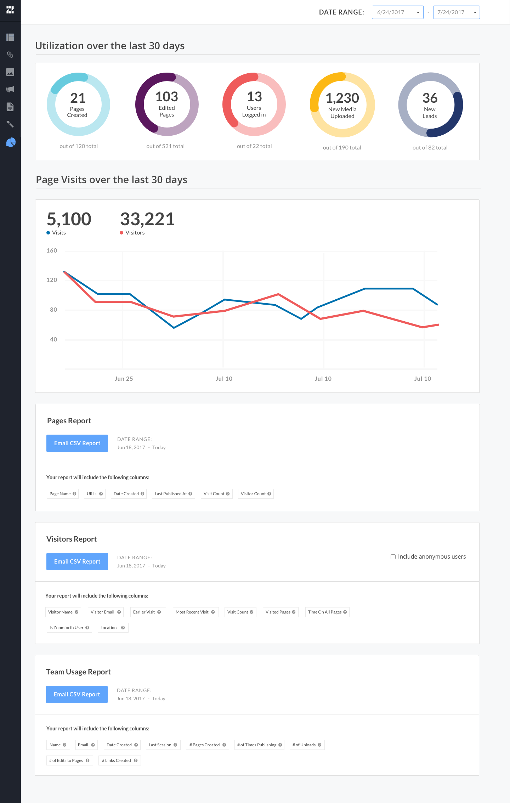

Role
Team
Software
Skills
UI/UX Designer
CEO Chris Murphy
Sketch
UI/UX, Visual Design
Zoomforth is an online platform which allows users to quickly assemble any content: media, text, videos, files, etc., into experiences called “Pages”, customize and share with a target audience, and track engagement in real time. The goal of this project was to give Zoomforth customers a better understanding of the impact of their content and their Zoomforth pages on their audience, and make it easy for them to translate that information to others.
This text mockup laid out all the key functions needed on the analytics reporting dashboard. I referenced this text mockup to guide the UI design in organizing the information.
For confidentiality reasons, only a preview of the text mockup is shown here.
The final UI has percentage pie charts in the summary as an effective way to visualize the selected time range data versus the total data. The line graph of visits and visitors also shows the correlation between the two and the progression over the selected time range. Lastly, each report lists underneath the different data columns included to give the user a preview of the report.
